Adjacencies
An adjacency relation records that two placed spaces share a boundary edge — either with each other (interior adjacency) or with the outside world (exterior adjacency). Adjacencies are the bridge between the Level-1 Layout and the downstream passes that place walls, doors, windows, and running constraint checks:
builduses them to decide where party walls go vs. where a single wall faces the envelope.build_walls(in the WallGraph layer) turns each interior adjacency into one shared wall segment, and each exterior adjacency into an envelope segment.- The constraint library relies on adjacency data to check
must_adjoin,all_reachable,max_dead_end,preferred_orientation,facade_ratio, and more.
The data shape
KhepriBase.AdjacencyRelation — Type
AdjacencyRelationRecords that two spaces share an edge on the same level. space_b is nothing when the shared edge faces the exterior.
Each AdjacencyRelation carries the two Space ids it relates (space_b === nothing for exterior edges), the 2D shared edge in world coordinates, and the z-elevation of the storey it lives on. Spaces on different elevations never share an edge — the classifier groups by z before comparing geometry.
Computing adjacencies
Two entry points, one algorithm. Both flow through classify_all_edges in Spaces.jl so the "which edges are shared between which spaces?" math has a single authoritative implementation.
KhepriBase.adjacencies — Function
adjacencies(l::Layout)Compute per-storey adjacency relations for a Layout on demand. Each entry is an AdjacencyRelation stamped with the storey's z-elevation.
KhepriBase.detect_adjacencies — Function
detect_adjacencies(spaces)Find shared edges between placed spaces grouped by z-elevation. spaces is any iterable of Space (e.g. a Dict of Symbol => Space or a bare Vector). Spaces on different storey elevations never share an edge.
Prefer adjacencies when you already have a Layout — this form exists for callers who hold a loose collection of spaces.
Prefer adjacencies(layout) when you already hold a Layout — it iterates storeys and stamps each AdjacencyRelation with the correct level_z. Use detect_adjacencies(spaces) when you have a loose collection (a Vector{Space}, or a Dict{Symbol, Space}) and have not wrapped them into a Layout yet.
The interior and exterior edges of a four-room layout:

Worked example
using KhepriBase
desc = (room(:living, :living_room, 5.0, 4.0) |
room(:kitchen, :kitchen, 3.0, 4.0)) /
(room(:bed, :bedroom, 4.0, 3.0) |
room(:bath, :bathroom, 2.5, 3.0))
l = layout(desc)
adjs = adjacencies(l)
# How many interior party-wall edges are there?
count(a -> !isnothing(a.space_b), adjs)
# Which rooms sit on the exterior skin?
exterior_rooms = unique(a.space_a for a in adjs if isnothing(a.space_b))See also
- Layout Engine — how
layout(desc)produces theLayoutthatadjacenciesconsumes. - Spaces — the narrative intro to the space-first layout model.
- Wall Graph — how adjacencies become physical walls once
buildruns. - Constraints (reference) — library constraints that operate on adjacency data.